南北大武
EN
20240227-3/2
我盼望爬大山好久了，想在高山草地上打滾、想看艷橘的太陽探出山頭、想脫離一切當個自由的人，專注於當下的一切。這次山行所賦予我的悸動是下山後時常想起的、難以輕描淡寫簡而言之的，它被沖淡、磨損，但它讓我愛上山，愛上這種靈魂顫動的感覺。
我的體能和眼界都在這次山行中抵達到了一個新的境界，我們的體力每天不斷地被大量消耗，但過程中每次的驚嘆還有腎上腺素飆升的時刻成就了這收穫滿滿又大飽眼福的四天，這就是他的迷人之處吧！我成了稜線、花朵、倒木、苔蘚的一部份，只有當下要思考，沒有過去和未來。
第一天我們重裝上了2000，到了營地再去單攻北大武山，汗水沿著濕透的瀏海滑進了我的眼睛，刺痛又氣喘吁吁，要放棄前先問問自己有沒有盡全力了？後面要攻頂的路有好多假山頭，我一邊哀怨著，一邊加快著腳步，南疆聖山山頂究竟長怎樣呢？她壯麗、沈靜，我們用雙腳看到了遐想已久的雲海，一切是那麼的新鮮美好。
第二天我們便啟程前往南大武山，穿梭在箭竹叢中。我喜歡走在瘦稜上的感覺，彷彿自己站在這個如此遼闊又充滿不確定性的世界最高處，迫不及待的走在前頭想趕快的看到前方的一切，這份期待很漫長、遙遠、也很重，首中總喜歡過問別人的八卦，宇謙會用笑容讓他放棄追問，我則笑嘻嘻地看著這兩個人。沿著那窄窄的稜線走，看著兩旁的雲海、高山、植被，大飽眼福且從容的走著。找路、判位、貼了一張路條、抓著芒草小心翼翼的過斷頭稜，總怕沒踩好失足，幸好植被很密實堅硬，加上好笨溫柔的指引我便變得不那麼害怕了，但得小心別抓到有刺植物，隨意的信任會帶來錐心的痛。我們就這樣依序的邊聊天順利的過完這個地形，不過我們還是花了比預期多了許多時間，最後迫降在了彎刀營地。
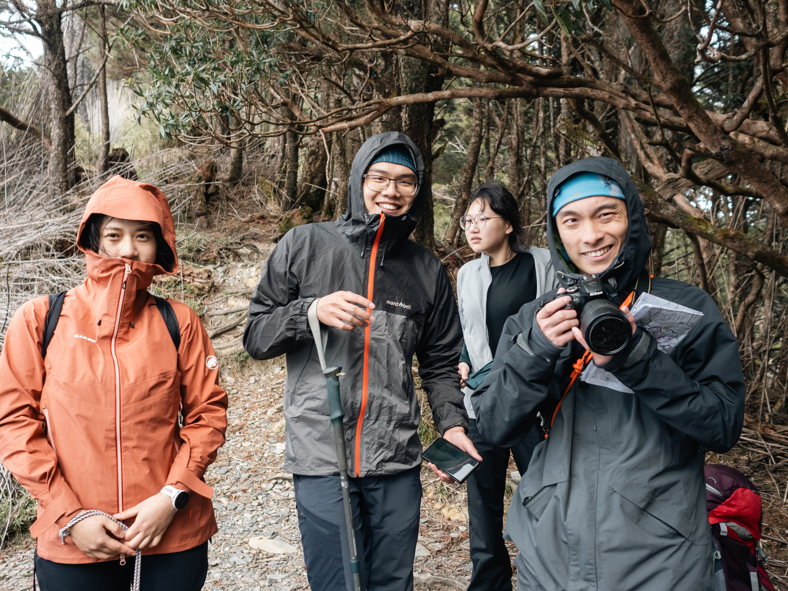
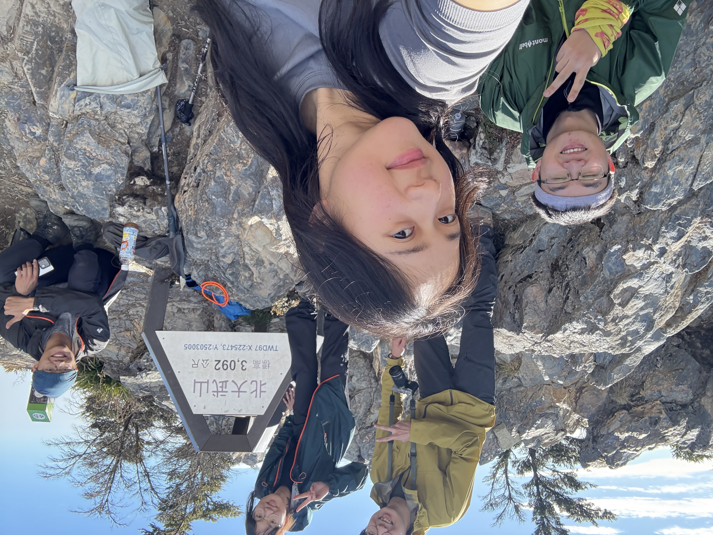
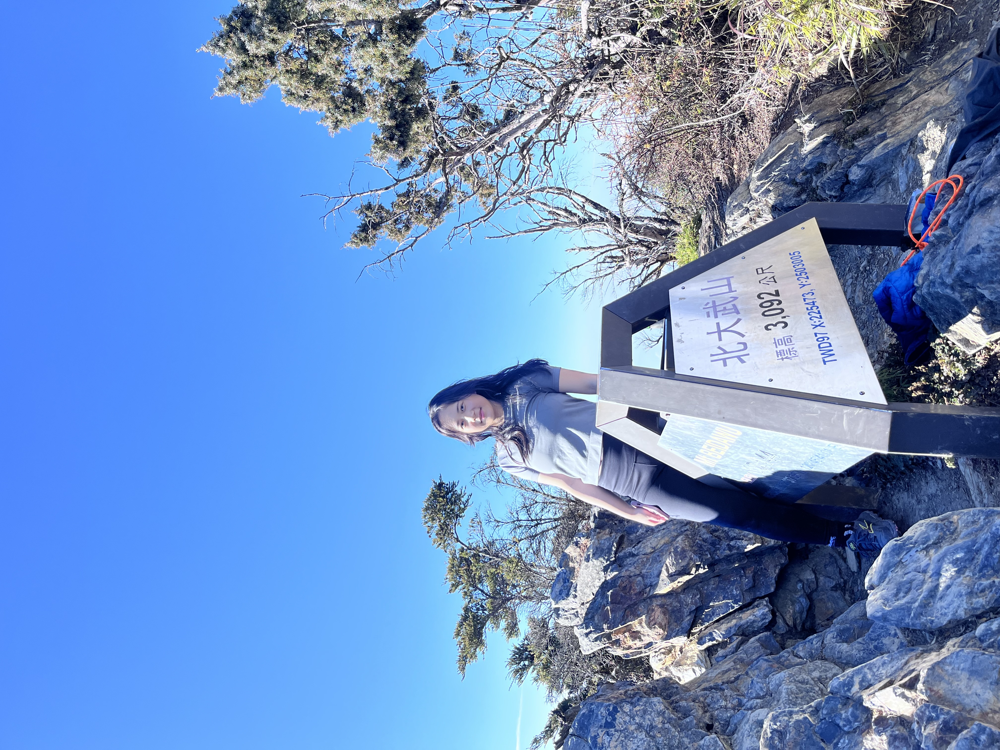
開始山脊的綠是不同種的綠，灰褐色的表層上有灰綠、蔥綠然後是墨綠的植被分布，只要換個角度看，那山脊變化成了另一種樣貌。我們走著走著，翻過了好多山頭，每每往回看除了感嘆自己雙腳的力量，更多的是欣賞山脊和雲海的碰觸，沿著山脊慢慢往下看，他們像穿著裙子般下圍被濃密、厚實又輕盈飄逸的雲海給包裹住，由於這一路並沒有許多山稜阻擋視線，我們也不需再仰眺雲，時常放眼望去，看到的是一大片雲海，雲海和其上的廣大蒼穹以及無崖無際的海洋，他們的界線模糊曖昧，不同的藍色彼此渲染。我們所看到的每片雲海都有不同的美，最令人驚嘆的便是日落之時，艷橘的太陽在雲海上慢慢下沉，彩霞把整個世界渲染成了另一種美好，天上的雲層、我們腳旁的雲海、山脊上的植被、身邊的枝椏都在這個時刻，幽微卻直接的產生了光彩的變化，直到黑夜來臨之前，我貪婪的想把握住目光所及的一切，來餵哺我那貧乏狹小的心靈，氣溫越來越低，只想蜷縮在睡袋裡再做一次像今天一樣的夢。
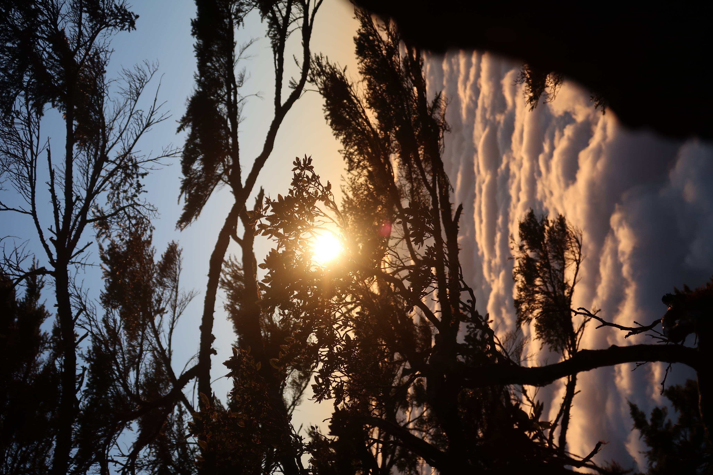
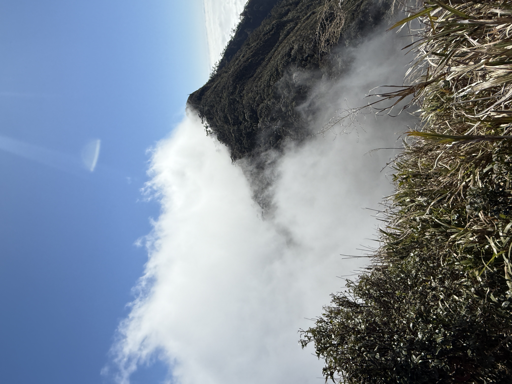
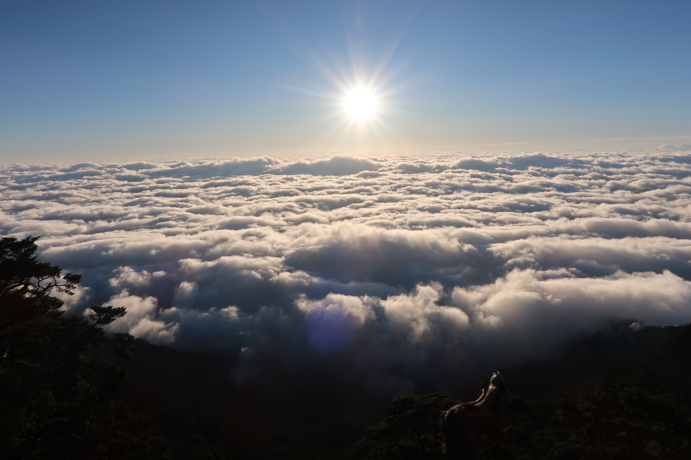
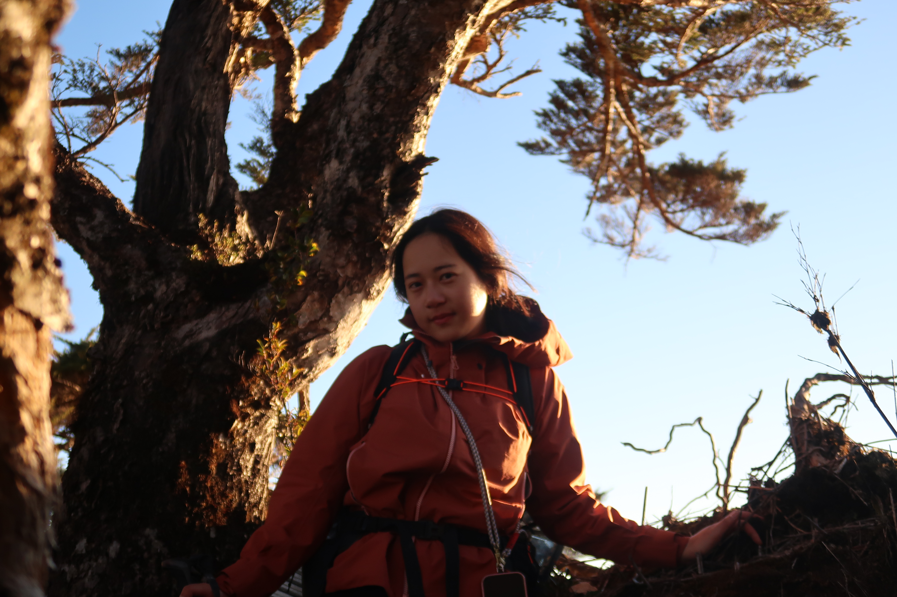
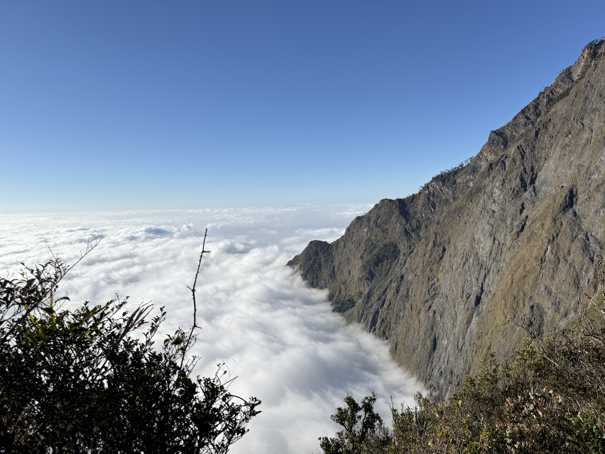
第三天的行程是一樣的充實呀，也是最為刺激的一天，壬煜昨天才跟我說過今天的重頭戲才是最可怕的，我不敢有絲毫怠懈。 從起登沒過多久上到稜線上時我們放眼望去是一大片想像中世界最美好的樣子，我相信那刻我是屏住呼吸的，橘紅色的日出和一整片的雲海相交、相容，像把整個世界點燃一般，是種令人屏氣凝神的絢麗，每個人的臉龐都被照得金黃，髮絲閃耀著好美的光。我的驚嘆沒停而且說了wow 和omg二十次吧！用極端一點的說法，是令人感到死而無憾的美。
人總是貪心的，我想坐在那看這這片天空一整天，但該趕的路還是得趕，稜上的路很難走，邊用力的往前進邊欣賞著破曉的陽光從我們腳下衝出雲層的包圍追逐著白霧，也看到遙遠的北大武山山頂，被薄薄的霧靄籠罩著。雲像飄揚的船帆；一隻悠閒的老鷹，在天地之間飄蕩。踩著旭陽和流雲所映照的稜上。
抖上到南大武山三角點後，11：30我們便開始面對南大武山與其前鋒中的困難地形，遠看山峰的高聳險峻之樣在這時出現在了腳前，從瘦稜到下攀，橫渡到刀稜，往下看著那近垂直、光禿禿的岩壁心臟不由得的開始怦跳，我喜懼參半直勾勾的凝視著，該怎麼過去呢？最危險的便是橫渡到瘦稜上及通過刀稜的部分，其中有一段更是沒有腳點，只有一條細長站不住腳的稜，和一條細扁帶，只能匍匐前進，多了蘇老師的指引，也因為對於先前地形的恐懼，我選擇第一個過地形，全神貫注屏住專注的通過，彷彿多亂想一秒；多害怕一刻都會讓身體更加沈重，重裝的背包還有那裸露的稜都讓人更加的懼怕、難以前進，我大口的呼吸、手指還在抖動、臉頰被陽光的炙熱曬得刺痛，此時此刻我真切地感受到了生命力的鮮活還有脆弱，死亡是那麼的近，回頭看著遙遠的首中，小心翼翼地慢慢像騎大象一般狼狽的過關斬將的完成了這一一關卡，「我過完了！先到安全的地方等你們！」我衝去陰涼處讓疾駛的心臟還有發燙的身體冷卻，我盼著可以趕緊聽看到他們，殊不知這一等就是心有餘悸的一小時，全隊13：40才安全通過，隨後到前鋒陰涼處小休並決定拆隊，宇謙和首中先行出發到佳興營地取水，再和我們會合，後隊我、佩璇、好笨、壬煜於14：30分出發。
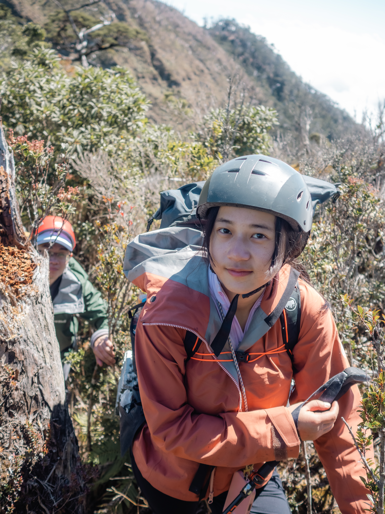
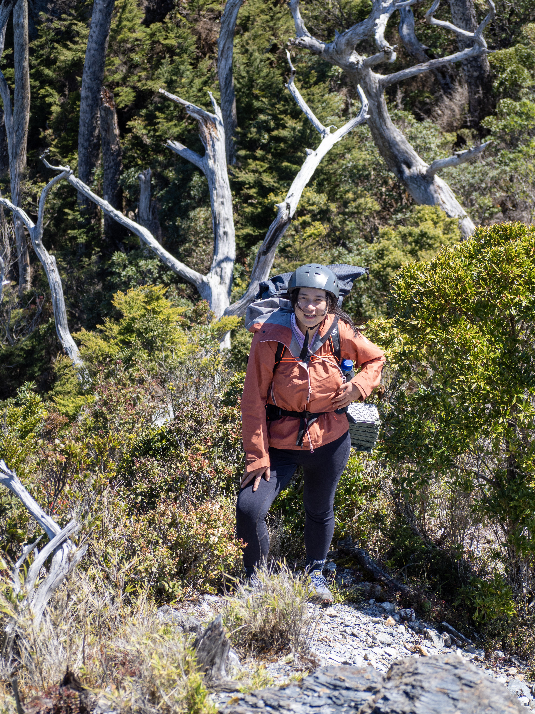
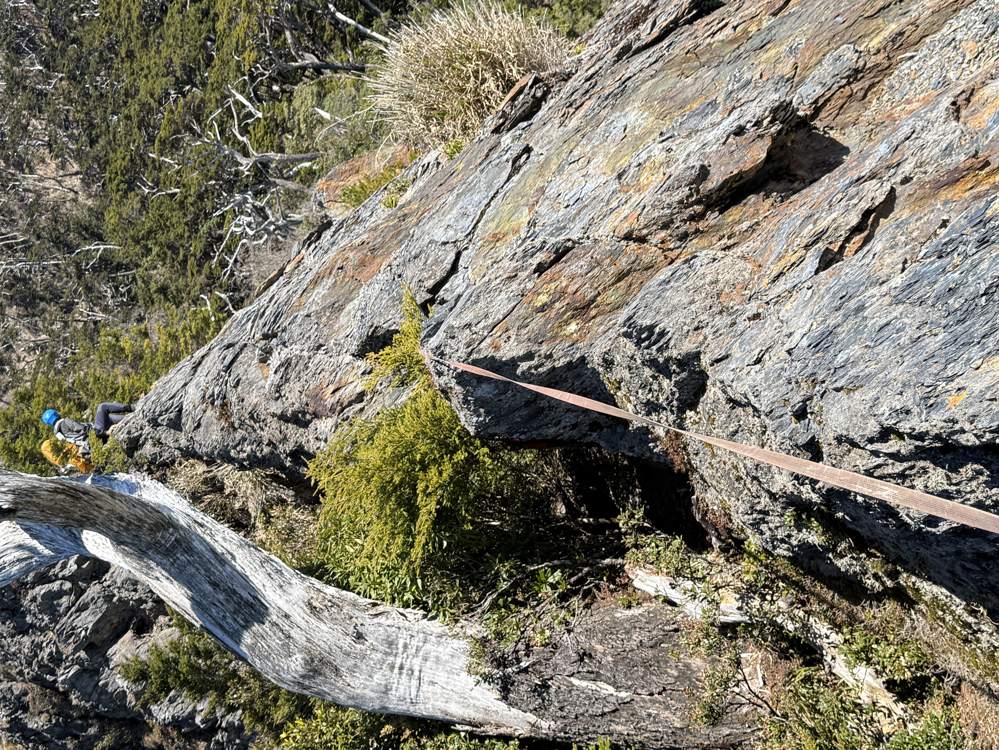
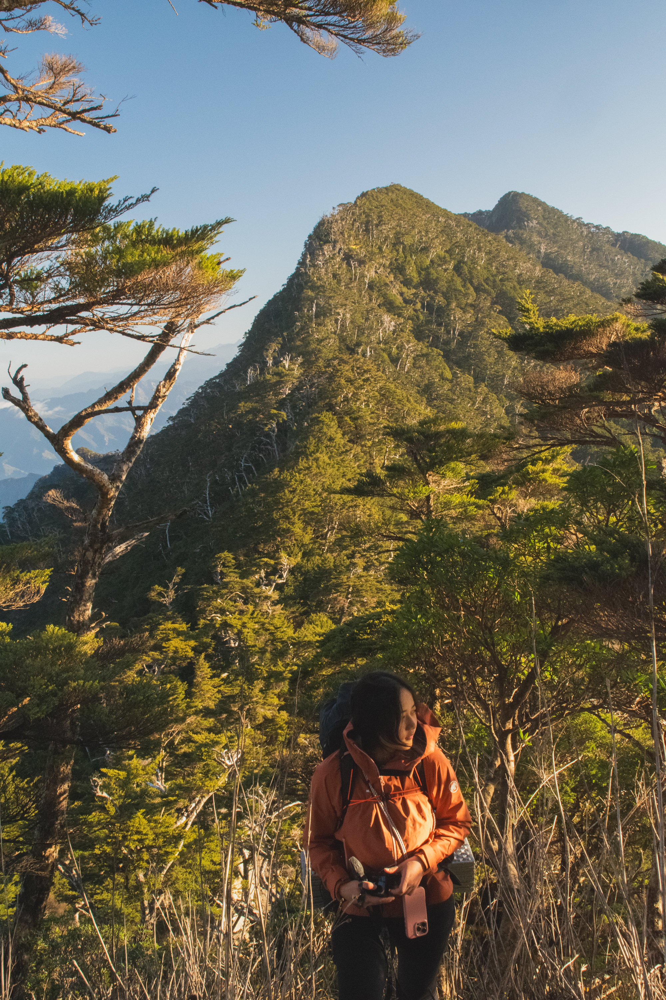
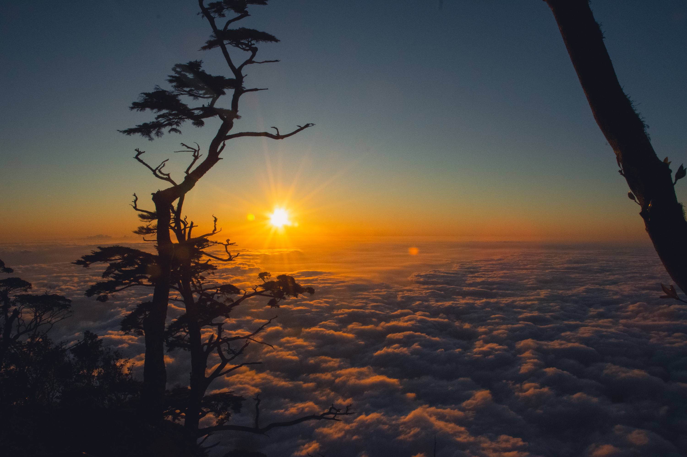
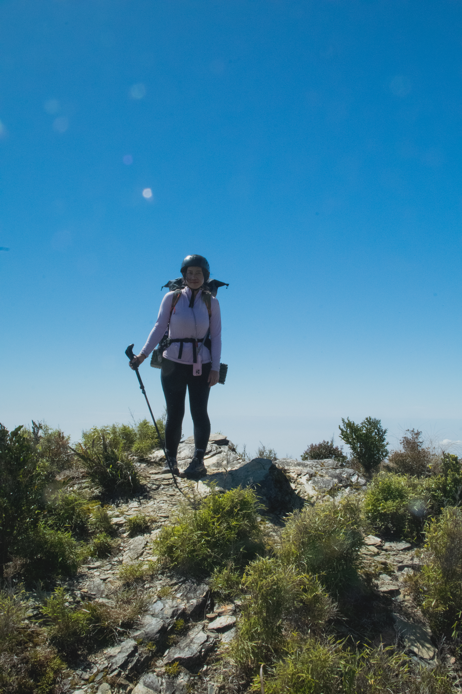
從一開始的找路、架繩和過地形，我驚訝，且疑問為何好笨總能如此令人安心，總能面不改色地過地形再露出笑容；宇謙在找路時眼睛總是閃爍的，他也總是如此的可靠；壬煜領隊和引導的從從容、溫柔及行走的輕巧；首中就算怕到腳抖還是堅定的先鋒架起了繩，他們都是這樣的有餘裕、有能力呀！還記得好笨途中問我有沒有想考實領，而我覺得那還很遙遠，但在現在交稿的當下我已經是個實領了，只不過沒有聽好笨的話趁年輕多喝幾杯珍奶XD。
我們這兩隊在六小時後才見到了彼此，從芒草中的陡下、曝曬、到林道，僅用頭燈照亮的森林是令人畏懼的，摸黑趕路的不安感在看到他們時轉瞬消失，我想給他們個擁抱，月光穿過樹梢投射在林道上，我們大口的喝著那珍貴的水，開心的分享著我們看到的螢火蟲，還有滿天的星斗。
21:40我們到了佳興山莊，拖著疲憊的身軀，但心是滿的，更多的是對隊友的感激之情。 隔日我們慢悠悠的做早餐，玩鬆餅粉漿玩了一會兒，也在營地附近探索了一番，佳興山莊附近的蕨類在陽光照射下閃閃發光，露珠點綴在像蕾絲花邊的葉片上，偶爾會有紫色小花探出頭，彩蝶在上方跳起了華爾滋。我們10：00才出發，用我們長了水泡疼痛的雙腳踢著林道奔向目的地。 我和好笨得了「低山症」手指頭腫了起來，有些緊繃不適，看來這時的黃金定律是要立刻上升海拔吧！身體在對我呼喊她對於下山接近都市的不快，這種感覺於是就陪著我下山、回家，和肌肉疼痛一起消逝。